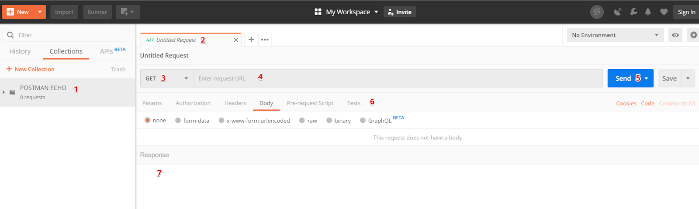
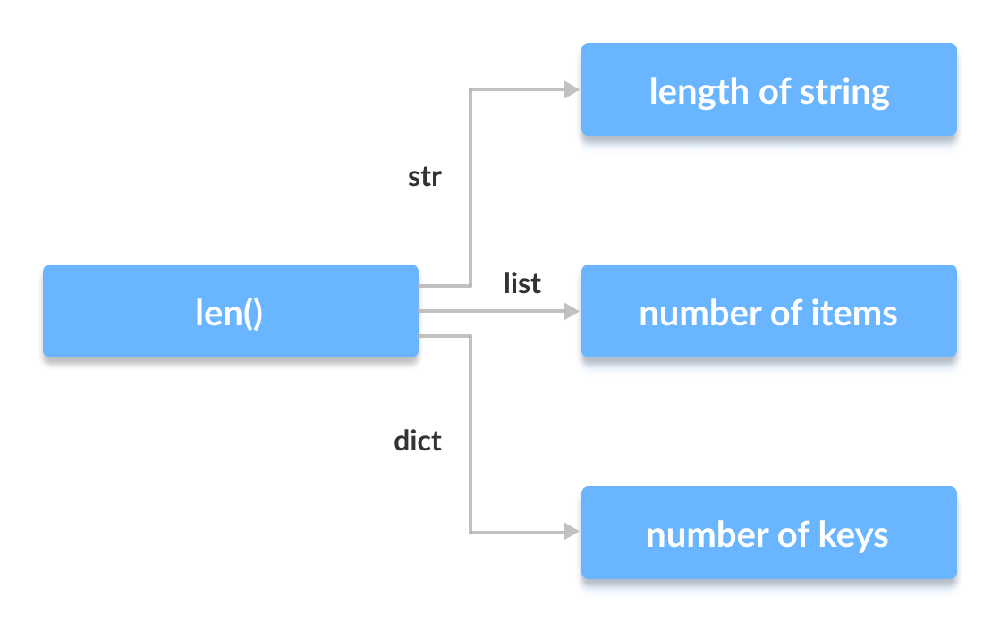
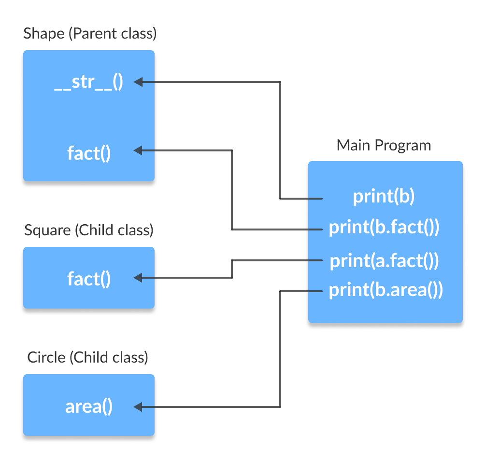

La programación orientada a objetos (POO) es una metodología de desarrollo de software que se basa en el concepto de clase y objeto, mientras que el programa en sí se crea como una colección de objetos que interactúan entre sí y con el mundo exterior. Cada objeto es una instancia de alguna clase. Las clases forman jerarquías.
Hay tres "pilares" principales de la programación orientada a objetos: encapsulación, herencia y polimorfismo.
Encapsular significa ocultar detalles de implementación, datos, etc. desde fuera. Por ejemplo, puede definir una clase de “refrigerador”, que contendrá los siguientes datos: fabricante, volumen, número de compartimentos de almacenamiento, consumo de energía, etc., y métodos: abrir/cerrar el refrigerador, encender/apagar, pero a al mismo tiempo implementa cómo el encendido y apagado directo no está disponible para el usuario de tu clase, lo que te permite cambiarlo sin temor a que esto pueda afectar el programa que usa la clase “refrigerador”. En este caso, la clase pasa a ser un nuevo tipo de datos dentro del programa desarrollado. Puedes crear variables de este nuevo tipo, estas variables se llaman objetos.
La herencia se refiere a la capacidad de crear una nueva clase basada en una existente. La herencia implica una relación "es" entre la clase heredera y la clase padre. En este caso, la clase descendiente contendrá los mismos atributos y métodos que la clase base, pero puede (y debe) expandirse agregando nuevos métodos y atributos.
Un ejemplo de una clase base que demuestra herencia es la clase “automóvil”, que tiene atributos: peso, potencia del motor, volumen del tanque de combustible y métodos: arranque y parada. Dicha clase puede tener un descendiente: "camión", contendrá los mismos atributos y métodos que la clase "automóvil", y propiedades adicionales: el número de ejes, la potencia del compresor, etc.
El polimorfismo permite que los objetos que tienen la misma interfaz sean tratados por igual, independientemente de la implementación interna del objeto. Por ejemplo, con un objeto de la clase “camión”, puedes realizar las mismas operaciones que con un objeto de la clase “coche”, porque el primero es heredero del segundo, mientras que la afirmación inversa no es cierta (al menos no siempre). En otras palabras, el polimorfismo implica diferentes implementaciones de métodos con los mismos nombres. Esto es muy útil al heredar, cuando en una clase descendiente puedes anular los métodos de la clase principal.
La creación de una clase en Python comienza con la declaración de clase. Así será la clase mínima.
class C:
pass
Una clase consta de una declaración (la declaración de clase), un nombre de clase (en nuestro caso, el nombre C) y un cuerpo de clase que contiene atributos y métodos (nuestra clase mínima tiene solo una declaración de paso).
Para crear un objeto de clase, debe utilizar la siguiente sintaxis:
object_name = class_name()
Como se mencionó anteriormente, una clase puede contener atributos y métodos. Un atributo puede ser estático o dinámico (nivel de objeto de clase). El punto es que para trabajar con un atributo estático, no es necesario crear una instancia de la clase, pero para trabajar con un atributo dinámico, sí. Ejemplo:
class Rectangle:
default_color = "green"
def __init__(self, width, height):
self.width = width
self.height = height
En la clase presentada anteriormente, el atributo default_color es un atributo estático y, como se mencionó anteriormente, se puede acceder a él sin crear un objeto de la clase Rectangle.
>>> Rectangle.default_color
'green'
width y height son atributos dinámicos, se utilizó la palabra clave self al crearlos. Por ahora, délo por sentado; el self se analizará con más detalle a continuación. Para acceder a width y height, primero necesita crear un objeto de la clase Rectangle:
>>> rect = Rectangle(10, 20)
>>> rect.width
10
>>> rect.height
20
Si accedemos a él a través de la clase, obtendremos un error:
>>> Rectangle.width
Traceback (most recent call last):
File "<stdin>", line 1, in <module>
AttributeError: type object 'Rectangle' has no attribute 'width'
Al mismo tiempo, si accede a un atributo estático a través de una instancia de clase, todo estará bien hasta que intente cambiarlo.
Comprobemos nuevamente el valor del atributo default_color:
>>> Rectangle.default_color
'green'
Asignémosle un nuevo valor:
>>> Rectangle.default_color = "red"
>>> Rectangle.default_color
'red'
Creemos dos objetos de la clase Rectangle y verifiquemos que su color_predeterminado sea el mismo:
>>> r1 = Rectangle(1,2)
>>> r2 = Rectangle(10, 20)
>>> r1.default_color
'red'
>>> r2.default_color
'red'
Si cambia el valor default_color a través del nombre de la clase Rectangle, entonces todo será como se esperaba: para los objetos r1 y r2 este valor cambiará, pero si lo cambia a través de una instancia de la clase, entonces un atributo con el mismo nombre. se creará para la instancia como estática y se perderá el acceso a esta última:
Cambie default_color a través de r1:
>>> r1.default_color = "blue"
>>> r1.default_color
'blue'
En este caso, r2 conserva el valor del atributo estático:
>>> r2.default_color
'red'
>>> Rectangle.default_color
'red'
En general, trabajar directamente con atributos no es una buena idea; es mejor utilizar propiedades para ello.
Agreguemos un método a nuestra clase. Un método es una función dentro de una clase que realiza un trabajo específico.
Los métodos pueden ser estáticos, de clase (el promedio entre estático y ordinario) y de nivel de clase (simplemente los llamaremos método). Se crea un método estático con el decorador @staticmethod, se crea un método de clase con el decorador @classmethod, se le pasa cls como primer argumento, se crea un método normal sin un decorador especial, se le pasa self como el primero argumento:
class MyClass:
@staticmethod
def ex_static_method():
print("static method")
@classmethod
def ex_class_method(cls):
print("class method")
def ex_method(self):
print("method")
Se pueden llamar métodos estáticos y de clase sin crear una instancia de la clase; llamar a ex_method() requiere un objeto:
>>> MyClass.ex_static_method()
static method
>>> MyClass.ex_class_method()
class method
>>> MyClass.ex_method()
Traceback (most recent call last):
File "<stdin>", line 1, in <module>
TypeError: ex_method() missing 1 required positional argument: 'self'
>>> m = MyClass()
>>> m.ex_method()
method
Python separa un constructor de clase y un método para inicializar una instancia de la clase. El constructor de la clase es el método __new__(cls, *args, **kwargs). Para inicializar una instancia de clase, se utiliza el método __init__(self). Al mismo tiempo, como habrás notado, __new__ es un método de clase, pero __init__ no lo es. El método __new__ rara vez se anula; la implementación del objeto de la clase base se usa con mayor frecuencia (consulte la sección Herencia), __init__, por el contrario, es una forma muy conveniente de configurar los parámetros de un objeto cuando se crea.
Creemos una implementación de la clase Rectangle con un constructor e inicializador modificados, a través del cual se establece el ancho y alto del rectángulo:
class Rectangle:
def __new__(cls, *args, **kwargs):
print("Hello from __new__")
return super().__new__(cls)
def __init__(self, width, height):
print("Hello from __init__")
self.width = width
self.height = height
>>> rect = Rectangle(10, 20)
Hello from __new__
Hello from __init__
>>> rect.width
10
>>> rect.height
20
Hasta este punto, ya se ha familiarizado con la palabra clave self. self es una referencia a la instancia actual de la clase; en lenguajes como Java y C#, el análogo es la palabra clave this. A través de self accedes a los atributos y métodos de la clase dentro de él:
class Rectangle:
def __init__(self, width, height):
self.width = width
self.height = height
def area(self):
return self.width * self.height
En la implementación anterior, el método area accede a los atributos width y height para calcular el area. Si no se hubiera especificado self como primer parámetro, el programa se habría detenido con un error al intentar llamar a area.
Si está familiarizado con los lenguajes de programación Java, C#, C++, probablemente ya se habrá preguntado: "¿cómo gestionar el nivel de acceso?" En los idiomas enumerados, puede indicar explícitamente para una variable que el acceso a ella desde fuera de la clase está prohibido mediante palabras clave (privada, protegida, etc.). Python no tiene tales capacidades y cualquiera puede acceder a los atributos y métodos de su clase si surge la necesidad. Este es un inconveniente importante de este lenguaje, porque... Se viola uno de los principios clave de la programación orientada a objetos: la encapsulación. Se considera de buena educación que para leer/cambiar un atributo se deben utilizar métodos especiales llamados getter/setter. Se pueden implementar, pero nada impedirá que se cambie el atributo directamente; Al mismo tiempo, existe un acuerdo de que un método o atributo que comienza con un guión bajo está oculto y no es necesario tocarlo fuera de la clase (aunque esto se puede hacer).
Hagamos los cambios apropiados a la clase Rectangle:
class Rectangle:
def __init__(self, width, height):
self._width = width
self._height = height
def get_width(self):
return self._width
def set_width(self, w):
self._width = w
def get_height(self):
return self._height
def set_height(self, h):
self._height = h
def area(self):
return self._width * self._height
El ejemplo anterior utiliza métodos especiales para acceder a _width y _height, pero no hay nada que le impida acceder a ellos (los atributos) directamente.
>>> rect = Rectangle(10, 20)
>>> rect.get_width()
10
>>> rect._width
10
Si un atributo o método comienza con dos guiones bajos, entonces ya no podrás acceder a él directamente (de forma sencilla). Modifiquemos nuestra clase Rectangle:
class Rectangle:
def __init__(self, width, height):
self.__width = width
self.__height = height
def get_width(self):
return self.__width
def set_width(self, w):
self.__width = w
def get_height(self):
return self.__height
def set_height(self, h):
self.__height = h
def area(self):
return self.__width * self.__height
Intentar acceder a __width directamente provocará un error, solo necesitarás trabajar con get_width():
>>> rect = Rectangle(10, 20)
>>> rect.__width
Traceback (most recent call last):
File "<stdin>", line 1, in <module>
AttributeError: 'Rectangle' object has no attribute '__width'
>>> rect.get_width()
10
Pero, de hecho, esto se puede hacer, solo que este atributo ahora se llama para uso externo: _Rectangle__width:
>>> rect._Rectangle__width
10
>>> rect._Rectangle__width = 20
>>> rect.get_width()
20
Una propiedad es un método de clase cuyo funcionamiento es similar al de un atributo. Para declarar un método como propiedad, debe utilizar el decorador @property.
Una ventaja importante de trabajar con propiedades es que puede validar los valores de entrada antes de asignarlos a atributos.
Implementemos la clase Rectangle usando propiedades:
class Rectangle:
def __init__(self, width, height):
self.__width = width
self.__height = height
@property
def width(self):
return self.__width
@width.setter
def width(self, w):
if w > 0:
self.__width = w
else:
raise ValueError
@property
def height(self):
return self.__height
@height.setter
def height(self, h):
if h > 0:
self.__height = h
else:
raise ValueError
def area(self):
return self.__width * self.__height
Ahora puedes trabajar con width y height como si fueran atributos:
>>> rect = Rectangle(10, 20)
>>> rect.width
10
>>> rect.height
20
No solo puede leer, sino también establecer nuevos valores para las propiedades:
>>> rect.width = 50
>>> rect.width
50
>>> rect.height = 70
>>> rect.height
70
Si notó: en el "settres" de estas propiedades, se verifican los valores de entrada, si el valor es menor que cero, se generará una excepción ValueError:
>>> rect.width = -10
Traceback (most recent call last):
File "<stdin>", line 1, in <module>
File "test.py", line 28, in width
raise ValueError
ValueError
Al menos dos clases participan en la organización de la herencia: la clase padre y la clase hija. En este caso, la herencia múltiple es posible; en este caso, una clase descendiente puede tener varios padres. No todos los lenguajes de programación admiten la herencia múltiple, pero Python puede usarla. De forma predeterminada, todas las clases en Python son descendientes del objeto; no es necesario indicar este hecho explícitamente.
Sintácticamente, crear una clase con su padre se ve así:
class class_name(parent_class_name_1, [parent_class_name_2,…, parent_class_name_n])
Reelaboremos nuestro ejemplo para que incluya la herencia:
class Figure:
def __init__(self, color):
self.__color = color
@property
def color(self):
return self.__color
@color.setter
def color(self, c):
self.__color = c
class Rectangle(Figure):
def __init__(self, width, height, color):
super().__init__(color)
self.__width = width
self.__height = height
@property
def width(self):
return self.__width
@width.setter
def width(self, w):
if w > 0:
self.__width = w
else:
raise ValueError
@property
def height(self):
return self.__height
@height.setter
def height(self, h):
if h > 0:
self.__height = h
else:
raise ValueError
def area(self):
return self.__width * self.__height
La clase principal es Figura, que cuando se inicializa toma el color de la figura y lo proporciona a través de propiedades. Rectángulo es una clase derivada de Figura. Presta atención a su método __init__: lo primero que hace es llamar al constructor (aunque esto no es del todo cierto, pero digámoslo así) de su clase padre:
super().__init__(color)
super es una palabra clave que se utiliza para hacer referencia a la clase principal.
Ahora, además de las ya conocidas propiedades de ancho y alto, un objeto de la clase Rectangle ahora tiene una propiedad de color:
>>> rect = Rectangle(10, 20, "green")
>>> rect.width
10
>>> rect.height
20
>>> rect.color
'green'
>>> rect.color = "red"
>>> rect.color
'red'
Como ya se mencionó en la introducción, en el marco de la programación orientada a objetos, el polimorfismo generalmente se usa desde la posición de anular métodos de la clase base en la clase descendiente. La forma más sencilla de ver esto es con un ejemplo. Agreguemos el método info() a nuestra clase base, que imprime información resumida sobre un objeto de la clase Figura y anulemos este método en la clase Rectangle, agregándole datos adicionales:
class Figure:
def __init__(self, color):
self.__color = color
@property
def color(self):
return self.__color
@color.setter
def color(self, c):
self.__color = c
def info(self):
print("Figure")
print("Color: " + self.__color)
class Rectangle(Figure):
def __init__(self, width, height, color):
super().__init__(color)
self.__width = width
self.__height = height
@property
def width(self):
return self.__width
@width.setter
def width(self, w):
if w > 0:
self.__width = w
else:
raise ValueError
@property
def height(self):
return self.__height
@height.setter
def height(self, h):
if h > 0:
self.__height = h
else:
raise ValueError
def info(self):
print("Rectangle")
print("Color: " + self.color)
print("Width: " + str(self.width))
print("Height: " + str(self.height))
print("Area: " + str(self.area()))
def area(self):
return self.__width * self.__height
Vamos a ver cómo funciona
>>> fig = Figure("orange")
>>> fig.info()
Figure
Color: orange
>>> rect = Rectangle(10, 20, "green")
>>> rect.info()
Rectangle
Color: green
Width: 10
Height: 20
Area: 200
Por tanto, la clase descendiente puede ampliar la funcionalidad de la clase padre.
Una API RESTful es una interfaz utilizada por dos sistemas informáticos para intercambiar información de forma segura a través de Internet. La mayoría de las aplicaciones empresariales deben interactuar con otras aplicaciones internas y de terceros para realizar diversas tareas. Por ejemplo, para generar nómina mensual, su sistema de contabilidad interno debe comunicarse con el sistema bancario de su cliente para automatizar la facturación e interactuar con la aplicación interna de tiempo y asistencia. Las API RESTful respaldan este intercambio de información porque siguen estándares seguros, confiables y eficientes para la interacción programática.
Una interfaz de programación de aplicaciones (API) define las reglas que se deben seguir para comunicarse con otros sistemas de software. Los desarrolladores implementan o crean API para permitir que otras aplicaciones interactúen mediante programación con sus aplicaciones. Por ejemplo, una aplicación de parte de horas contiene una API que solicita el nombre completo y el rango de fechas del empleado. Una vez recibida esta información, la interfaz procesa la hoja de horas del empleado internamente y devuelve la cantidad de horas trabajadas durante el período especificado.
De esta forma, la API de red funciona como puerta de enlace entre clientes y recursos en Internet.
Los clientes son usuarios que desean acceder a información en Internet. El cliente puede ser una persona o un sistema de software que utiliza la API. Por ejemplo, los desarrolladores pueden crear programas que accedan a datos meteorológicos desde un sistema meteorológico. También puede acceder a estos datos desde su navegador visitando un sitio web meteorológico.
Los recursos son información que varias aplicaciones proporcionan a sus clientes. Los recursos pueden ser imágenes, videos, texto, números o cualquier tipo de datos. La computadora que proporciona recursos al cliente también se llama servidor. Las API permiten a las organizaciones compartir recursos y proporcionar servicios web al mismo tiempo que brindan seguridad, control y autenticación. Además, la API ayuda a determinar qué clientes pueden acceder a determinados recursos internos.
Representational State Transfer (REST) es una arquitectura de software que define las condiciones operativas de una API. REST se creó originalmente como una guía para gestionar interacciones en una red compleja como Internet. La arquitectura basada en REST se puede utilizar para admitir comunicaciones confiables y de alto rendimiento a escala. Puede implementarse y modificarse fácilmente, proporcionando transparencia y portabilidad multiplataforma a cualquier sistema API.
Los desarrolladores pueden crear API utilizando múltiples arquitecturas. Las API que siguen el estilo arquitectónico REST se denominan API REST. Los servicios web que implementan la arquitectura REST se denominan servicios web RESTful. Generalmente, el término API RESTful se refiere a API RESTful basadas en red. Sin embargo, REST API y RESTful API son términos intercambiables.
A continuación se muestran algunos principios del estilo arquitectónico REST:
Una única interfaz es la base de diseño de cualquier servicio web RESTful. Esto indica que el servidor está transmitiendo información en un formato estándar. Un recurso formateado en REST se llama vista. Este formato puede diferir de la representación interna del recurso en la aplicación del servidor. Por ejemplo, un servidor puede almacenar datos como texto pero enviarlos en formato de presentación HTML.
Una única interfaz impone cuatro restricciones arquitectónicas:
- Las consultas deben identificar recursos. Esto ocurre a través de un único identificador de recurso.
- Los clientes tienen suficiente información en la vista de recursos para modificar o eliminar el recurso si lo desean. El servidor cumple esta condición enviando metadatos que describen con más detalle el recurso.
- Los clientes reciben información sobre el procesamiento posterior de los envíos. El servidor implementa esto enviando mensajes descriptivos que contienen metadatos sobre cómo el cliente puede usarlos mejor.
- Los clientes reciben información sobre todos los recursos relacionados necesarios para completar una tarea. El servidor implementa esto enviando hipervínculos en la vista para que los clientes puedan descubrir dinámicamente más recursos.
En la arquitectura REST, la apatridia se refiere a un método de comunicación en el que el servidor ejecuta cada solicitud del cliente independientemente de todas las solicitudes anteriores. Los clientes pueden solicitar recursos en cualquier orden y cada solicitud se aísla de otras solicitudes o su estado no se guarda. Esta limitación de diseño de la API REST implica que el servidor puede comprender y ejecutar completamente la solicitud en todo momento.
En una arquitectura de sistema en capas, el cliente puede conectarse a otros intermediarios autorizados entre el cliente y el servidor y aún recibir respuestas del servidor. Los servidores también pueden reenviar solicitudes a otros servidores. Puede diseñar su servicio web RESTful para que se ejecute en múltiples servidores, con múltiples capas (seguridad, aplicación y lógica de negocios) trabajando juntas para satisfacer las solicitudes de los clientes. Estos niveles permanecen invisibles para el cliente.
Los servicios web RESTful admiten el almacenamiento en caché, que es el proceso de almacenar algunas respuestas en el cliente o corredor para reducir el tiempo de respuesta del servidor. Por ejemplo, visita un sitio web con imágenes genéricas de encabezado y pie de página en cada página. Cada vez que visita una nueva página de un sitio web, el servidor debe reenviar las mismas imágenes. Para evitar esto, el cliente almacena en caché o almacena estas imágenes después de la primera respuesta y luego usa las imágenes del caché. Los servicios web RESTful gestionan el almacenamiento en caché mediante respuestas API que se definen como almacenables en caché o no almacenables en caché.
En el estilo arquitectónico REST, los servidores pueden ampliar o personalizar temporalmente la funcionalidad del cliente pasando el código de software. Por ejemplo, cuando completa un formulario de registro en un sitio web, su navegador resalta inmediatamente cualquier error que cometa (como números de teléfono incorrectos). Esto sucede gracias al código enviado por el servidor.
La API RESTful tiene las siguientes ventajas:
Los sistemas que implementan la API REST pueden escalar de manera eficiente optimizando la interacción entre el servidor y el cliente a través de REST. La apatridia quita la carga al servidor: el servidor no necesita almacenar información sobre solicitudes anteriores de clientes. El buen funcionamiento del caché elimina parcial o completamente algunas interacciones entre el cliente y el servidor. Las funciones enumeradas son escalables y no limitan el ancho de banda, lo que puede provocar un rendimiento deficiente.
Los servicios web RESTful admiten la separación completa de cliente y servidor. Simplifican y separan los distintos componentes del backend para que cada parte pueda evolucionar de forma independiente. Los cambios de plataforma o tecnología en la aplicación del servidor no afectan la aplicación del cliente. La capacidad de superponer la funcionalidad de la aplicación aumenta aún más la flexibilidad. Por ejemplo, los desarrolladores pueden realizar cambios en la capa de la base de datos sin reescribir la lógica de la aplicación.
La API REST es independiente de la tecnología utilizada. Puede crear aplicaciones tanto de cliente como de servidor en diferentes lenguajes de programación sin afectar la estructura de la API. También es posible cambiar la tecnología subyacente en cualquier lado sin afectar el intercambio de datos.
El principio básico de cómo funciona una API RESTful es el mismo que funciona en Internet. El cliente se comunica con el servidor mediante una API cuando requiere un recurso. Los desarrolladores describen el principio de uso de la API REST por parte del cliente en la documentación de la API de la aplicación del servidor. A continuación se detallan los pasos principales de una solicitud de API REST:
- El cliente envía una solicitud al servidor. Según la documentación de la API, el cliente formatea la solicitud de una manera que el servidor pueda entender.
- El servidor autentica al cliente y confirma que está autorizado para realizar esta solicitud.
- El servidor recibe la solicitud y la procesa internamente.
- El servidor devuelve una respuesta al cliente. La respuesta contiene información que le dice al cliente si la solicitud fue exitosa. La solicitud también incluye información solicitada por el cliente.
¿Qué es
Los detalles de solicitud y respuesta de una API REST pueden variar ligeramente según cómo los desarrolladores diseñen la API.
La API RESTful requiere que las solicitudes contengan los siguientes componentes básicos:
El servidor asigna a cada recurso una ID de recurso única. En el caso de los servicios REST, el servidor identifica los recursos mediante un localizador uniforme de recursos (URL). URL especifica la ruta al recurso. Una URL es similar a la dirección del sitio web que ingresa en su navegador para visitar una página web. La URL también se denomina dirección de solicitud y le
indica claramente al servidor lo que requiere el cliente.
Normalmente, los desarrolladores implementan API RESTful utilizando el Protocolo de transferencia de hipertexto (HTTP). El método HTTP le dice al servidor qué debe hacer con el recurso. A continuación se muestran cuatro métodos HTTP comunes:
Los clientes utilizan GET para acceder a los recursos ubicados en el servidor en una URL específica. Pueden almacenar en caché las solicitudes GET y enviar parámetros en una solicitud de API RESTful para indicarle al servidor que filtre los datos aна русскомntes de enviarlos.
Los clientes utilizan POST para enviar datos al servidor. Al hacerlo, incluyen representaciones de datos en la solicitud. Enviar la misma solicitud POST varias veces tiene el efecto secundario de crear el mismo recurso varias veces.
Los clientes usan PUT para actualizar los recursos existentes en el servidor. A diferencia de POST, enviar la misma solicitud PUT varias veces produce el mismo resultado en un servicio web RESTful.
Los clientes utilizan una solicitud DELETE para eliminar un recurso. Una solicitud DELETE puede cambiar el estado del servidor. Sin embargo, si el usuario no tiene la autenticación adecuada, la solicitud falla.
Los encabezados de solicitud son metadatos intercambiados entre el cliente y el servidor. Por ejemplo, el encabezado de la solicitud especifica el formato de la solicitud y la respuesta, proporciona información sobre el estado de la solicitud, etc.
Las solicitudes de API REST pueden incluir datos para permitir que POST, PUT y otros métodos HTTP tengan éxito.
Las solicitudes de API RESTful pueden incluir parámetros que proporcionan al servidor información más detallada sobre las acciones requeridas. A continuación se muestran algunos tipos de parámetros:
- Parámetros de ruta, que especifican los detalles de la URL.
- Parámetros de consulta que solicitan información adicional sobre el recurso.
- Configuraciones de cookies que autentican rápidamente a los clientes.
El servicio web RESTful debe autenticar las solicitudes para luego enviar una respuesta. La autenticación es el proceso de confirmar la identidad. Por ejemplo, puede utilizar una tarjeta de identificación o una licencia de conducir para verificar su identidad. De manera similar, los clientes de un servicio RESTful deben demostrar su identidad al servidor para establecer confianza.
La API RESTful admite cuatro métodos de autenticación comunes:
HTTP define algunos esquemas de autenticación que se pueden utilizar al implementar una API REST. A continuación se muestran dos de estos diagramas:
Autenticación básica
Con la autenticación básica, el cliente envía el nombre de usuario y la contraseña en el encabezado de la solicitud. Los codifica utilizando el método de codificación base64, que convierte el par de nombre de usuario y contraseña en un conjunto de 64 caracteres para una transmisión segura.
Autenticación de portador
La autenticación del portador es el proceso de otorgar control de acceso al portador de un token. Normalmente, un token de portador es una cadena cifrada de caracteres que genera el servidor en respuesta a una solicitud de inicio de sesión. El cliente envía un token en los encabezados de solicitud para acceder a los recursos.
Las claves API son otra opción para la autenticación de API REST. Con este enfoque, el servidor genera un valor único y lo asigna al primer cliente. Cada vez que un cliente intenta acceder a los recursos, utiliza una clave API única para la verificación. Las claves API son menos seguras: dado que el cliente debe entregar la clave, es más probable que la roben.
OAuth combina contraseñas y tokens para iniciar sesión de forma segura en cualquier sistema. El servidor primero solicita una contraseña y luego un token adicional para completar el proceso de autorización. Puede validar el token en cualquier momento y también después de un cierto período de tiempo según el alcance y el período de validez.
Los principios REST requieren que la respuesta del servidor contenga los siguientes componentes:
La línea de estado contiene un código de estado de tres dígitos que indica el éxito o el fracaso de la solicitud. Por ejemplo, los códigos 2XX indican éxito, mientras que los códigos 4XX y 5XX indican errores. Los códigos 3XX indican una redirección de URL.
A continuación se muestran algunos códigos de estado comunes:
200: respuesta general de éxito
201: respuesta de éxito POST
400: Solicitud incorrecta que el servidor no puede procesar
404: recurso no encontrado
El cuerpo de la respuesta contiene una representación del recurso. El servidor selecciona un formato de presentación apropiado en función del contenido de los encabezados de la solicitud. Los clientes pueden solicitar información en formatos XML o JSON: estos definen un registro de texto plano de los datos. Por ejemplo, si un cliente solicita el nombre y la edad de una persona llamada John, el servidor devuelve una representación JSON en el siguiente formato:
'{"name":"John", "age":30}'
La respuesta también contiene encabezados o metadatos sobre la respuesta. Dan más contexto a la respuesta e incluyen información como el nombre del servidor, codificación, fecha y tipo de contenido.
NoSQL (“no solo SQL”) es un enfoque para el diseño de bases de datos que le permite almacenar y consultar datos fuera de las estructuras tradicionales utilizadas en las bases de datos relacionales. Fue creado principalmente para trabajar con datos no estructurados que se generan a partir de numerosas fuentes como documentos, audio, video, redes sociales, etc. Las bases de datos NoSQL son las más adecuadas para aplicaciones modernas donde los modelos de datos están evolucionando y la escalabilidad es importante. Esta base de datos ha ganado popularidad en los últimos años, ya que las empresas ahora tienen que lidiar con datos no estructurados más que nunca. Este modelo almacena datos de manera diferente a las tablas relacionales tradicionales, lo que permite almacenar datos relacionados en una única estructura de datos. Las bases de datos NoSQL se pueden dividir en cuatro categorías:
- Almacenamiento de documento
- Bases de datos de valores clave
- Almacenamiento de columna ancha
- Bases de datos de gráficos
Las bases de datos NoSQL se utilizaNoSQL (“no solo SQL”) es un enfoque para el diseño de bases de datos que le permite almacenar y consultar datos fuera de las estructuras tradicionales utilizadas en las bases de datos relacionales. Fue creado principalmente para trabajar con datos no estructurados que se generan a partir de numerosas fuentes como documentos, audio, video, redes sociales, etc. Las bases de datos NoSQL son las más adecuadas para aplicaciones modernas donde los modelos de datos están evolucionando y la escalabilidad es importante. Esta base de datos ha ganado popularidad en los últimos años, ya que las empresas ahora tienen que lidiar con datos no estructurados más que nunca. Este modelo almacena datos de manera diferente a las tablas relacionales tradicionales, lo que permite almacenar datos relacionados en una única estructura de datos. Las bases de datos NoSQL se pueden dividir en cuatro categorías:
- Almacenamiento de documento
- Bases de datos de valores clave
- Almacenamiento de columna anchn a menudo en proyectos ágiles porque ofrecen modelos de datos flexibles. Esto permite a los desarrolladores centrarse en la lógica y los algoritmos empresariales en lugar de tener que lidiar con actualizaciones de esquemas. Si espera que el modelo de datos de su aplicación permanezca flexible para adaptarse a los cambios a lo largo del tiempo, entonces un diseño de base de datos NoSQL flexible puede adaptarse a sus propósitos.
MongoDB es una base de datos de código abierto orientada a documentos publicada originalmente en febrero de 2009. Las bases de datos orientadas a documentos son muy diferentes de las bases de datos relacionales tradicionales. Almacenan toda la información de un objeto determinado en una instancia y cada objeto almacenado puede ser diferente de todos los demás. Esto elimina la necesidad de mapeo relacional de objetos y permite un diseño sin esquemas, lo que brinda a los desarrolladores de aplicaciones la capacidad de evolucionar rápidamente con un modelo de datos flexible. En lugar de adaptar una aplicación a los requisitos de un esquema, los desarrolladores crean la aplicación y luego sigue el esquema.
MongoDB es muy popular debido a su flexibilidad, facilidad de aprendizaje y bajo costo para comenzar. A los desarrolladores de aplicaciones les encanta MongoDB porque pueden cambiar el modelo de datos sobre la marcha y porque MongoDB utiliza documentos JSON para registrar datos. JSON es omnipresente y puede considerarse el formato de facto para transferir datos masivos entre aplicaciones web y puntos finales. Su diseño simple y su flexibilidad lo hacen fácil de leer y comprender y, en la mayoría de los casos, fácil de manipular en el lenguaje de programación de su elección.
Otra característica importante de MongoDB son sus funciones integradas de alta disponibilidad, como replicación, conjunto de réplicas y fragmentación. Es escalable horizontalmente, lo que le permite reducir su carga de trabajo y escalar su negocio con facilidad. Ofrece replicación utilizando su propio protocolo de consenso, que se basa en Raft, y puede distribuir datos entre fragmentos utilizando un enrutador de solicitudes llamado mongos. Puede utilizar ClusterControl para implementar fácilmente un conjunto de réplicas de MongoDB y configurar un grupo de fragmentos.
Postman es un cliente HTTP para probar API. Los clientes HTTP prueban enviar solicitudes del cliente al servidor y recibir una respuesta del servidor.
API (Interfaz de programación de aplicaciones) es una interfaz para intercambiar datos desde un servidor entre dos aplicaciones o componentes de software. Postman ayuda a los evaluadores a diseñar diseños de API y crear servidores simulados (simuladores de operación de aplicaciones). Por ejemplo, con Postman puede probar cómo la API registra un nuevo usuario de la aplicación, cómo agrega y elimina datos sobre él en el servidor.
Con Postman, un evaluador puede:
- redactar y enviar solicitudes HTTP a la API;
- crear colecciones (un conjunto de consultas secuenciales) y carpetas de consultas para reducir el tiempo de prueba;
- cambiar los parámetros de la solicitud (por ejemplo, claves de autorización y URL);
- cambiar entornos para solicitudes (por ejemplo, en un banco de pruebas, localmente o en un servidor);
- agregar puntos de control al llamar a la API (fijando el momento de la transferencia de datos);
- Realice pruebas de API automatizadas utilizando una colección de solicitudes mediante Collection Runner.
El programa utiliza el protocolo HTTP para trabajar con servidores. El evaluador envía solicitudes de prueba del cliente al servidor y recibe una respuesta si hay un error en la API.
Postman está disponible como aplicación para Windows, Linux y macOS, así como en una interfaz web (es necesario instalar el programa Postman Desktop Agent para que funcione). Así es como se ve trabajar con colecciones de consultas:

1. Una colección de solicitudes para una prueba de API. Dentro de una colección, las solicitudes se pueden combinar en carpetas.
2. Solicitar pestaña de la colección.
3. Seleccionar un método para la solicitud (GET, POST, PUT, DELETE).
4. URL de la solicitud en el servidor.
5. Botón enviar solicitud.
6. Seleccionar parámetros de consulta (claves y valores, por ejemplo, solo objetos remotos).
7. El resultado de la solicitud (código, cuerpo y tiempo de respuesta, así como el tamaño de los datos recibidos).
Una colección es un archivo de proyecto con consultas asociadas. Normalmente, las solicitudes para probar una API se describen en una colección. Dentro de la colección, las solicitudes se pueden agrupar en carpetas, por ejemplo, según diferentes versiones de API o elementos de la aplicación que se están probando.
Postman tiene una herramienta Collection Runner. Le permite ejecutar simultáneamente todas las consultas de una colección o carpeta con el número deseado de iteraciones y en el orden deseado. Una vez completadas todas las solicitudes, Collection Runner emite un informe que indica el éxito de las solicitudes y los códigos de estado.
Para pruebas automatizadas, puede aplicar scripts JavaScript a colecciones, carpetas y consultas. Por ejemplo, con la ayuda de scripts, puede utilizar el resultado de una consulta como condición para otra.
La mayoría de las veces, las API utilizan la arquitectura RESTful. Esta arquitectura tiene cuatro métodos estándar para consultar servidores a través de HTTP:
POST - crear un objeto y enviar datos al servidor;
GET - obtener información del servidor;
PUT - actualización de objetos;
DELETE - eliminar un objeto.
En Postman, puede probar solicitudes para cada método: debe seleccionarlo en la pestaña de solicitud. Después de enviar la solicitud, el evaluador recibe una respuesta en forma de código de estado HTTP. Hay 40 estados de este tipo en cinco categorías; cada código ayuda a comprender si la API está funcionando correctamente.
1xx
- Información
- Informar sobre el estado de la transferencia de datos
2xx
- Éxito
- Solicitud completada exitosamente
3xx
- Redirección
- Es posible que la solicitud se complete correctamente, pero en una URL diferente.
4xx
- error del cliente
- Indica un error del lado del cliente que impide que se complete la solicitud
5xx
- Error del Servidor
- Indicación de un error en el lado del servidor por el cual no puede procesar la solicitud
- Indicación de un error en el lado del servidor por el cual no puede procesar la solicitud
Literalmente, polimorfismo significa muchas formas.
El polimorfismo es una idea muy importante en programación. Consiste en utilizar una única entidad (método, operador u objeto) para representar diferentes tipos en diferentes casos de uso.
Veamos un ejemplo:
Sabemos que el operador + se usa a menudo en programas de Python. Pero no tiene un único uso.
Para un tipo de datos entero, el operador + se utiliza para sumar los operandos.
num1 = 1
num2 = 2
print(num1 + num2)
Entonces el programa mostrará 3.
De manera similar, el operador + para cadenas se utiliza para la concatenación.
str1 = "Python"
str2 = "Programming"
print(str1+" "+str2)
El resultado será Python Programming.
Aquí podemos ver un único operador + realizando diferentes operaciones en diferentes tipos de datos. Este es uno de los ejemplos más simples de polimorfismo en Python.
Python tiene algunas funciones que pueden aceptar argumentos de diferentes tipos.
Una de esas funciones es len(). Puede aceptar varios tipos de datos. Veamos un ejemplo de cómo funciona esto.
print(len("Programiz"))
print(len(["Python", "Java", "C"]))
print(len({"Name": "John", "Address": "Nepal"}))
Output:
9
3
2
Aquí podemos ver que la función len() puede manejar diferentes tipos de datos, como cadenas, listas, tuplas, conjuntos y diccionarios. Sin embargo, podemos ver que devuelve información específica de cada tipo de datos.

El polimorfismo es una idea muy importante en la programación orientada a objetos.
Podemos usar la idea de polimorfismo para métodos de clase, ya que diferentes clases en Python pueden tener métodos con el mismo nombre.
Posteriormente podemos generalizar la llamada a estos métodos, ignorando el objeto con el que estamos trabajando. Veamos un ejemplo:
class Cat:
def __init__(self, name, age):
self.name = name
self.age = age
def info(self):
print(f"I am a cat. My name is {self.name}. I am {self.age} years old.")
def make_sound(self):
print("Meow")
class Dog:
def __init__(self, name, age):
self.name = name
self.age = age
def info(self):
print(f"I am a dog. My name is {self.name}. I am {self.age} years old.")
def make_sound(self):
print("Bark")
cat1 = Cat("Kitty", 2.5)
dog1 = Dog("Fluffy", 4)
for animal in (cat1, dog1):
animal.make_sound()
animal.info()
animal.make_sound()
Output:
Meow
I am a cat. My name is Kitty. I am 2.5 years old.
Meow
Bark
I am a dog. My name is Fluffy. I am 4 years old.
Bark
Aquí hemos creado dos clases Cat y Dog. Tienen una estructura similar y tienen métodos con los mismos nombres info() y make_sound().
Sin embargo, tenga en cuenta que no creamos una clase principal común ni conectamos clases de ninguna otra manera. Aunque podemos empaquetar dos objetos diferentes en una tupla e iterar sobre ella, usaremos la variable común animal. Esto es posible gracias al polimorfismo.
Como en otros lenguajes de programación, en Python, las clases hijas pueden heredar métodos y atributos de su clase padre. Podemos anular algunos métodos y atributos específicamente para que coincidan con una clase secundaria, un comportamiento que conocemos como anulación de métodos.
El polimorfismo nos permite tener acceso a estos métodos y atributos anulados que tienen el mismo nombre que en la clase principal.
Veamos un ejemplo:
from math import pi
class Shape:
def __init__(self, name):
self.name = name
def area(self):
pass
def fact(self):
return "I am a two-dimensional shape."
def __str__(self):
return self.name
class Square(Shape):
def __init__(self, length):
super().__init__("Square")
self.length = length
def area(self):
return self.length**2
def fact(self):
return "Squares have each angle equal to 90 degrees."
class Circle(Shape):
def __init__(self, radius):
super().__init__("Circle")
self.radius = radius
def area(self):
return pi*self.radius**2
a = Square(4)
b = Circle(7)
print(b)
print(b.fact())
print(a.fact())
print(b.area())
Output:
Circle
I am a two-dimensional shape.
Squares have each angle equal to 90 degrees.
153.93804002589985
Aquí podemos ver que métodos como __str__(), que no fueron anulados en las clases secundarias, se utilizan desde la clase principal.
Gracias al polimorfismo, el intérprete de Python reconoce automáticamente que el método fact() para el objeto a(clase Square) está anulado. Y usa el definido en la clase secundaria.
Por otro lado, dado que el método fact() para el objeto b no se anula, se utiliza el método con el mismo nombre de la clase principal (Shape).

Tenga en cuenta que la sobrecarga de métodos (crear métodos con el mismo nombre pero diferentes tipos de argumentos) no es compatible con Python.
Los métodos mágicos, o métodos dunder (doble guión bajo), en Python comienzan y terminan con un doble guión bajo. Nos permiten definir comportamientos especiales para objetos, como un método __init__ especial para inicializar un nuevo objeto. Cuando se utilizan operaciones estándar como suma, resta, acceso a atributos, etc., el intérprete llama a los métodos mágicos correspondientes.
__new__(cls[, ...]) - método para crear un tipo de clase. Toma como primer argumento el tipo de la clase en la que se llama y normalmente devuelve ese mismo tipo. Se utiliza principalmente para configurar la creación de una instancia de clase de aquellos objetos que heredan de tipos inmutables (por ejemplo, int, str o tuple).
__init__(self[, ...]) - constructor de clase. Se utiliza al definir objetos.
__init_subclass__(cls) - le permite anular la creación de subclases de objetos. Por ejemplo, agregue atributos adicionales:
__del__(self) - es el destructor de clases. Lo llama automáticamente el recolector de basura y casi nunca se usa, excepto cuando es necesario advertir al usuario sobre identificadores abiertos.
__repr__(self) - cadena de información sobre el objeto. Se imprime cuando se llama a la función repr(...) o durante la depuración. Este método está destinado a este último. Por ejemplo:
>>> class Test:
>>> def __repr__(self):
>>> return ""
>>>
>>> Test()
... ''
__str__(self) - se llama cuando se llama a la función str(...), devuelve un objeto de cadena. Por ejemplo:
>>> class Test:
>>> def __str__(self):
>>> return "Hello World"
>>>
>>> test = Test()
>>> str(test)
... 'Hello World'
__bytes__(self) - similar a __str__(self), solo se devuelve un conjunto de bytes.
__format__(self, format_spec) - se llama cuando se llama a format(...) y se usa para formatear una cadena usando literales de cadena.
__lt__(self, other) - define el comportamiento del operador de comparación "menor que", <.
__le__(self, other) - define el comportamiento del operador de comparación menor o igual, <=.
__eq__(self, other) - define el comportamiento del operador de "igualdad", ==.
__ne__(self, other) - define el comportamiento del operador de “desigualdad”, !=.
__gt__(self, other) - define el comportamiento del operador de comparación “mayor que”, >.
__ge__(self, other) - define el comportamiento del operador de comparación mayor o igual, >=.
__hash__(self) - lo llama la función hash(...) y se utiliza para determinar la suma de comprobación de un objeto para demostrar su unicidad. Por ejemplo, para agregar un objeto a un set, frozenset, o usarlo como clave en un diccionario dict.
__bool__(self) - Llamado por la función bool(...) y devuelve True o False según la implementación. Si este método no está implementado en un objeto y el objeto es algún tipo de secuencia (lista, tupla, etc.), se llama al método __len__. Se utiliza principalmente en condiciones if, por ejemplo:
>>> class Test:
>>> def __bool__(self):
>>> return True
>>>
>>> test = Test()
>>>
>>> if test:
>>> print("Hello World")
>>>
... 'Hello World'
El acceso a todas las propiedades del objeto también se controla mediante métodos separados:
__getattr__(self, name) - llamado por el método getattr(...) o cuando se accede a un atributo de objeto a través de x.y, donde x es el objeto e y es el atributo.
__setattr__(self, nombre, valor) - llamado por el método setattr(...) o cuando se accede a un atributo de objeto y luego se determina el valor del atributo pasado. Por ejemplo: x.y = 1, donde x es un objeto, y es un atributo y 1 es el valor del atributo.
__delattr__(self, name) - llamado mediante el método delattr(...) o cuando se elimina manualmente un atributo de un objeto usando del x.y, donde x es un objeto e y es un atributo.
__dir__(self) - llamado por el método dir(...) y muestra una lista de atributos de objetos disponibles.
Cualquier objeto puede implementar métodos de secuencia integrados (diccionarios, tuplas, listas, cadenas, etc.). El acceso a los valores de secuencia se anula mediante los siguientes métodos:
__len__(self) - lo llama el método len(...) y devuelve el número de elementos de la secuencia.
__getitem__(self, key): se llama al acceder a un elemento en una secuencia mediante su clave (índice). El método debe generar una excepción TypeError si se utiliza un tipo de clave incorrecto y un KeyError si ningún elemento de la secuencia coincide con la clave dada. Por ejemplo:
>>> list_object = [1, 2, 3, 4, 5]
>>> print(list_object[0])
... 1
>>>
>>> string_object = "hello world"
>>> print(string_object[0:5])
... 'hello'
>>>
>>> dict_object = {"key0": True, "key1": False}
>>> print(dict_object["key0"])
... True
__setitem__(self, key, value): se llama al asignar cualquier valor a un elemento de la secuencia. También puede generar excepciones TypeError y KeyError. Por ejemplo:
>>> list_object = [1, 2, 3, 4, 5]
>>> list_object[0] = 78
>>> print(list_object)
... [78, 2, 3, 4, 5]
>>>
>>> dict_object = {"key0": True, "key1": False}
>>> dict_object["key0"] = False
>>> print(dict_object)
... {"key0": False, "key1": False}
__delitem__(self, key): se llama cuando un valor en una secuencia es eliminado por su índice (clave) usando la sintaxis de la palabra clave del.
__missing__(self, key): se llama en los casos en que el valor no existe en la secuencia.
__iter__(self) - llamado por el método iter(...) y devuelve un iterador de la secuencia, por ejemplo, para usar el objeto en un bucle:
>>> class Test:
>>> def __iter__(self):
>>> return (1, 2, 3)
>>>
>>> for value in Test():
>>> print(value)
... 1
... 2
... 3
__reversed__(self) - llamado por el método invertido(...) y, similar al método __iter__, devuelve el mismo iterador, solo que en orden inverso.
__contains__(self, item): se llama cuando se verifica si un elemento pertenece a una secuencia que usa in o not in.
Estos métodos se dividen en varios grupos: operadores unarios, aritmética ordinaria, operadores aritméticos reflejados, asignaciones compuestas y conversiones de tipos.
__neg__(self) - define el comportamiento de negación (-a)
__pos__(self) - define el comportamiento del unario más (+a)
__abs__(self) - define el comportamiento de la función incorporada abs(...)
__invert__(self) - define el comportamiento para invertir con el operador ~
__add__(self, other) - suma, operador +
__sub__(yo, otro) - resta, operador -
__mul__(self, other) — multiplicación, operador *
__matmul__(self, other) — multiplicación de matrices, operador @
__truediv__(yo, otro) - división, operador /
__floordiv__(self, other) - división de enteros, operador //
__mod__(self, other) — resto de la división, operador %
__divmod__(self, other): división con resto, define el comportamiento de la función incorporada divmod(...)
__pow__(self, other[, módulo]) - exponenciación, operador **
__lshift__(self, other) — desplazamiento binario a la izquierda, operador <<
__rshift__(self, other) - desplazamiento binario a la derecha, operador >>
__and__(self, other) - operador binario AND, &
__xor__(self, other) - O exclusivo, operador ^
__or__(self, other) - operador binario OR |
Si en la aritmética ordinaria entre los objetos a y b, el objeto que modificamos es a, y el objeto con el que operamos es b, entonces en la aritmética reflejada es al revés: b es mutable, a es el objeto con el que operamos y que pasó como argumento.
La lista de métodos es similar a la utilizada en aritmética ordinaria, excepto que el prefijo "r" se agrega a todos los métodos:
__radd__(self, other) - suma, operador +
__rsub__(self, other) - resta, operador -
__rmul__(self, other) — multiplicación, operador *
__rmatmul__(self, other) — multiplicación de matrices, operador @
__rtruediv__(self, other) - división, operador /
__rfloordiv__(self, other) - división de enteros, operador //
__rmod__(self, other) — resto de la división, operador %
__rdivmod__(self, other) — división con resto
__rpow__(self, other[, módulo]) - exponenciación, operador **
__rlshift__(self, other) — desplazamiento binario a la izquierda, operador <<
__rrshift__(self, other) - desplazamiento binario a la derecha, operador >>
__rand__(self, other) - operador binario AND, &
__rxor__(self, other) - O exclusivo, operador ^
__ror__(self, other) - operador binario OR |
Estos métodos son una combinación de un operador "normal" y una asignación. Devuelve el mismo tipo de objeto que se asignará a la variable de la izquierda.
__iadd__(self, other) — suma con asignación, operador +=
__isub__(self, other) — resta con asignación, operador -=
__imul__(self, other) — multiplicación con asignación, operador *=
__imatmul__(self, other) — multiplicación de matrices con asignación, operador @=
__itruediv__(self, other) - división con asignación, operador /=
__ifloordiv__(self, other) — división de enteros con asignación, operador //=
__imod__(self, other) — resto de la división con asignación, %= operador
__ipow__(self, other[, modulo]) - exponenciación con asignación, operador **=
__ilshift__(self, other) — desplazamiento binario a la izquierda con asignación, operador <<=
__irshift__(self, other) — desplazamiento binario a la derecha con asignación, operador >>=
__iand__(self, other) - AND binario con asignación, operador &=
__ixor__(self, other) — OR exclusivo con asignación, operador ^=
__ior__(self, other) - binario OR con asignación, operador |=
Además, Python tiene muchos métodos que le permiten anular el comportamiento de las funciones de conversión de tipos integradas como int(...), float(...), etc. Por ejemplo:
__complex__(self) - conversión de tipo a número complejo
__int__(self) - conversión de tipo a int
__float__(self) - conversión de tipo a flotante
__index__(self): conversión de tipos a int cuando el objeto se utiliza en sectores (expresiones como [inicio:parada:paso])
__round__(self[, ndigits]) - redondear un número usando la función round(...)
__trunc__(self) - llamado por el método math.trunc(...)
__floor__(self) - llamado por el método math.floor(...)
__ceil__(self) - llamado por el método math.ceil(...)
__call__(self[, args...]) - permite que cualquier instancia de la clase se comporte como una función normal. Por ejemplo:
>>> class Test:
>>> def __call__(self, message):
>>> print(message)
>>> return True
>>>
>>> test = Test()
>>> test("Hello World")
... 'Hello World'
... True
__await__(self): devuelve un iterador, convirtiendo la clase en una corrutina, cuyo resultado se puede obtener usando await.
Cualquier objeto se puede representar como un administrador de contexto, al que se llama usando with o async with. Esta construcción le permite realizar cualquier acción para configurar el objeto y, al salir del administrador de contexto, realizar cualquier acción de limpieza, independientemente de si la excepción fue causada en el bloque del administrador de contexto.
__enter__(self) - define el comienzo del bloque del administrador de contexto llamado con with
__exit__(self, exc_type, exc_value, traceback): define el final del bloque del administrador de contexto. Se puede utilizar para controlar excepciones, limpieza o cualquier acción que deba realizarse después de un bloque dentro de un with. Si el bloque se ejecutó correctamente, los tres argumentos (exc_type, exc_value y traceback) se establecerán en None.
>>> class ContextManager:
>>> def __enter__(self):
>>> log("entering context")
>>>
>>> def __exit__(self, exc_type, exc_value, traceback):
>>> log("exiting context")
>>>
>>> with ContextManager():
... print("in context manager")
...
... 'entering context'
... 'in context manager'
... 'exiting context'
__aenter__(self) - similar a __enter__, solo que la función devuelve una corrutina (cuyo resultado se puede obtener usando await)
__aexit__(self, exc_type, exc_value, traceback): similar a __exit__, solo que la función devuelve una corrutina (cuyo resultado se puede obtener usando await)
>>> class AsyncContextManager:
>>> async def __aenter__(self):
>>> await log("entering context")
>>>
>>> async def __aexit__(self, exc_type, exc_value, traceback):
>>> await log("exiting context")
>>>
>>> async with AsyncContextManager():
... print("in context manager")
...
... 'entering context'
... 'in context manager'
... 'exiting context'
Comprender a los decoradores es un hito importante para cualquier programador de Python.
Los decoradores en Python le permiten ampliar y cambiar el comportamiento de los objetos invocables (funciones, métodos y clases) sin cambiar permanentemente el objeto invocable en sí.
Cualquier funcionalidad suficientemente general que pueda "adjuntarse" al comportamiento de una clase o función existente es un excelente ejemplo del uso de decoradores. Esto incluye:
- Inicio sesión,
- proporcionar control de acceso y autenticación,
- herramientas y funciones de gestión del tiempo,
- límite de velocidad,
- almacenamiento en caché y mucho más.
Ésta es una pregunta justa. Lo que acabo de mencionar suena bastante abstracto y puede resultar difícil entender cómo los decoradores pueden ayudar a un desarrollador de Python en su trabajo diario. He aquí un ejemplo:
Imagine que su programa de informes tiene 30 funciones con lógica empresarial. Una mañana lluviosa de lunes, tu jefe te dice:
“¿Recuerdas esos informes de TPS? Necesitamos agregar el registro de datos de entrada y salida en cada paso del generador de informes. La empresa XYZ necesita esto para una auditoría. Les dije que podríamos terminarlo el miércoles”.
Dependiendo de qué tan familiarizado esté con los decoradores de Python, esta solicitud aumentará su presión arterial o tomará estos nuevos requisitos con calma.
Sin conocimientos de decorador, probablemente pasará los próximos tres días intentando cambiar cada una de esas 30 funciones y abarrotándolas con llamadas de registro manual. Diviértete en general.
Si conoces a los decoradores, sonreirás con calma y dirás algo como: "Está bien, hoy estará listo a las 2 p. m.".
Inmediatamente después de esto, imprimirá el código para el decorador general @audit_log (solo alrededor de 10 líneas) y lo agregará antes de cada definición de función. Luego te comprometes y tomas una taza de café.
Estoy exagerando aquí, por supuesto. Pero solo un poco. Los decoradores realmente pueden ser así de poderosos.
Yo diría que comprender a los decoradores es un hito importante para cualquier programador experimentado en Python. Requieren una sólida comprensión de varios conceptos avanzados del lenguaje, incluidas las propiedades de funciones de primera clase.
Pero:
Comprender cómo funcionan los decoradores en Python es increíblemente gratificante.
Por supuesto, los decoradores parecen bastante difíciles de entender cuando se presentan por primera vez, pero son una característica muy útil que verá a menudo en marcos de trabajo de terceros y en la biblioteca estándar de Python.
Explicar los decoradores también es un capítulo importante en cualquier buen tutorial de Python.
Estas son las conclusiones más importantes de las "funciones de primera clase" para comprender a los decoradores:
- Las funciones son objetos: pueden asignarse a variables, pasarse a otras funciones y devolverse desde ellas.
- Las funciones se pueden definir dentro de otras funciones y una función secundaria puede capturar el estado local de la función principal (cierres léxicos).
Entonces, ¿qué son realmente los decoradores? "Decoran" o "envuelven" otra función y permiten que el código se ejecute antes y después de la ejecución de la función envuelta.
Los decoradores le permiten definir módulos reutilizables que pueden cambiar o ampliar el comportamiento de otras funciones. Además, le permiten hacer esto sin cambiar constantemente la función empaquetada. El comportamiento de una función cambia sólo cuando está decorada.
Entonces, ¿cómo es una implementación de decorador simple? En términos generales, un decorador es un objeto invocable que toma como entrada un objeto invocable y devuelve otro objeto invocable.
La siguiente función tiene esta propiedad y puede considerarse el decorador más simple que puedes escribir:
def null_decorator(func):
return func
Como puede ver, null_decorator es un objeto invocable, toma otro objeto invocable como entrada y devuelve el mismo objeto de entrada sin modificarlo.
Usémoslo para decorar (o envolver) otra función:
def greet():
return 'Hello!'
greet = null_decorator(greet)
>>> greet()
'Hello!'
En este ejemplo, definí la función greet y luego la decoré inmediatamente pasándola por la función null_decorator. Sé que esto no parece muy útil en este momento (diseñamos específicamente el decorador null para que sea inútil, ¿verdad?), pero después de un tiempo quedará más claro cómo funciona la sintaxis del decorador en Python.
En lugar de llamar explícitamente a null_decorator al greet y luego reasignar la variable greet, puedes usar la sintaxis @ de Python para decorar la función en un solo paso:
@null_decorator
def greet():
return 'Hello!'
>>> greet()
'Hello!'
Colocar líneas @null_decorator antes de la definición de una función es lo mismo que definir primero una función y luego aplicarle un decorador. Usar la sintaxis @ es simplemente azúcar sintáctico y una abreviatura de este patrón de uso común.
Tenga en cuenta que el uso de la sintaxis @ decora la función directamente en el momento de la definición. Esto dificulta el acceso al original sin decorar sin hacks frágiles. Por lo tanto, puede decorar algunas funciones manualmente para conservar la capacidad de llamar a una función no decorada.
Ahora que estás un poco familiarizado con la sintaxis del decorador, escribamos otro decorador que realmente haga algo y cambie el comportamiento de la función que se está decorando.
Aquí hay un decorador un poco más complejo que convierte el resultado de una función decorada a letras mayúsculas:
def uppercase(func):
def wrapper():
original_result = func()
modified_result = original_result.upper()
return modified_result
return wrapper
En lugar de simplemente devolver la función de entrada como lo hizo el decorador null, el decorador uppercase define una nueva función sobre la marcha (un cierre) y la usa para envolver la función de entrada para cambiar su comportamiento en el momento en que se llama.
Un cierre contenedor tiene acceso a la función de entrada no decorada y es libre de ejecutar código adicional antes y después de llamar a la función de entrada. (Técnicamente, no es necesario llamar a la función de entrada en absoluto).
Tenga en cuenta que la función decorada nunca se ha ejecutado antes. De hecho, llamar a la función de entrada en este punto no tiene ningún sentido: el decorador debería poder cambiar el comportamiento de su función de entrada cuando se llama.
Es hora de ver al decorador en uppercase en acción. ¿Qué pasa si decoras la función de greet original con él?
@uppercase
def greet():
return 'Hello!'
>>> greet()
'HELLO!'
Espero que este haya sido el resultado que esperabas. Echemos un vistazo más de cerca a lo que sucedió aquí. A diferencia de null_decorator, el decorador uppercase devuelve un objeto de función diferente cuando decora una función:
>>> greet
<function greet at 0x10e9f0950>
>>> null_decorator(greet)
<function greet at 0x10e9f0950>
>>> uppercase(greet)
<function uppercase.<locals>.wrapper at 0x10da02f28>
Como vio anteriormente, esto es necesario para cambiar el comportamiento de la función decorada cuando se llama. El decorador uppercase es en sí mismo una función. Y la única forma de influir en el "comportamiento futuro" de la función de entrada que decora es reemplazar (o envolver) la función de entrada con un cierre.
Es por eso que uppercase define y devuelve otra función (el cierre) que se puede llamar más tarde, ejecutando la función de entrada original y cambiando su salida.
Los decoradores cambian el comportamiento del objeto invocable mediante un contenedor, por lo que no es necesario cambiar el original constantemente. El objeto invocable no se modifica permanentemente; su comportamiento solo cambia cuando se adorna.
Esto le permite "adjuntar" funciones y clases existentes con módulos reutilizables como el registro y otras herramientas. Esto es lo que hace que los decoradores sean una característica tan poderosa en Python, que a menudo se usa en la biblioteca estándar y en paquetes de terceros.
Quizás no sea sorprendente que se pueda aplicar más de un decorador a una función. Esto acumula sus efectos y es lo que hace que los decoradores sean tan útiles como módulos reutilizables.
He aquí un ejemplo. Los dos decoradores siguientes envuelven la cadena de salida de la función que se está decorando en etiquetas HTML. Al observar cómo se anidan las etiquetas, puede ver el orden en el que Python aplica varios decoradores:
def strong(func):
def wrapper():
return '<strong>' + func() + '</strong>'
return wrapper
def emphasis(func):
def wrapper():
return '<em>' + func() + '</em>'
return wrapper
Ahora tomemos estos dos decoradores y apliquémoslos a nuestra función greet al mismo tiempo. Para hacer esto, puedes usar la sintaxis @ habitual y simplemente colocar varios decoradores encima de una función:
@strong
@emphasis
def greet():
return 'Hello!'
¿Qué resultado espera ver si ejecuta la función decorada? ¿El decorador @emphasis agregará primero su etiqueta <em> o @strong tendrá prioridad? Esto es lo que sucede cuando llamas a una función decorada:
>>> greet()
'<strong><em>Hello!</em></strong>'
Aquí se puede ver claramente el orden en el que se utilizaron los decoradores: de abajo hacia arriba. Primero, la función de entrada se envolvió con el decorador @emphasis y luego la función resultante (decorada) se envolvió nuevamente con el decorador @strong.
Para recordar este orden ascendente, me gusta llamar a este comportamiento "pila de decoradores". Comienzas a construir la pila en la parte inferior y luego continúas agregando nuevos bloques en la parte superior para avanzar hacia arriba.
Si desglosamos el ejemplo anterior y no usamos la sintaxis @ para aplicar decoradores, la cadena de llamadas a funciones de decorador se verá así:
decorated_greet = strong(emphasis(greet))
Aquí nuevamente puede ver que el decorador de énfasis se aplica primero y luego la función envuelta resultante se envuelve nuevamente con el decorador strong.
Esto también significa que los niveles profundos de superposición de decoradores eventualmente afectarán el rendimiento a medida que continúen agregando llamadas a funciones anidadas. Esto no suele ser un problema en la práctica, pero es algo a tener en cuenta si estás trabajando en código de alto rendimiento.
Todos los ejemplos hasta ahora han decorado sólo la función nula simple greet, que no acepta ningún argumento. Entonces, los decoradores que has visto aquí hasta ahora no se han ocupado de pasar argumentos a la función de entrada.
Si intenta aplicar uno de estos decoradores a una función que acepta argumentos, no funcionará correctamente. ¿Cómo decorar una función que toma argumentos arbitrarios?
Aquí es donde las funciones *args y **kwargs de Python resultan útiles para trabajar con un número variable de argumentos. El decorador proxy aprovecha esta característica:
def proxy(func):
def wrapper(*args, **kwargs):
return func(*args, **kwargs)
return wrapper
Hay dos cosas destacables sobre este decorador:
- Utiliza los operadores * y ** en la definición de cierre del contenedor para recopilar todos los argumentos clave y posicionales y almacenarlos en variables (args y kwargs).
- Luego, el cierre contenedor pasa los argumentos recopilados a la función de entrada original utilizando los operadores de "desenvolvimiento de argumentos" * y **.
Ampliemos la técnica detrás del decorador proxy con un ejemplo práctico más útil. Aquí hay un decorador de trace que imprime los argumentos y resultados de una función mientras se ejecuta:
def trace(func):
def wrapper(*args, **kwargs):
print(f'TRACE: calling {func.__name__}() '
f'with {args}, {kwargs}')
original_result = func(*args, **kwargs)
print(f'TRACE: {func.__name__}() '
f'returned {original_result!r}')
return original_result
return wrapper
Al decorar una función con trace y llamarla, puede imprimir los argumentos pasados a la función decorada y su valor de retorno. Este sigue siendo un ejemplo de juguete, pero en caso de necesidad será una gran ayuda para la depuración:
@trace
def say(name, line):
return f'{name}: {line}'
>>> say('Jane', 'Hello, World')
'TRACE: calling say() with ("Jane", "Hello, World"), {}'
'TRACE: say() returned "Jane: Hello, World"'
'Jane: Hello, World'